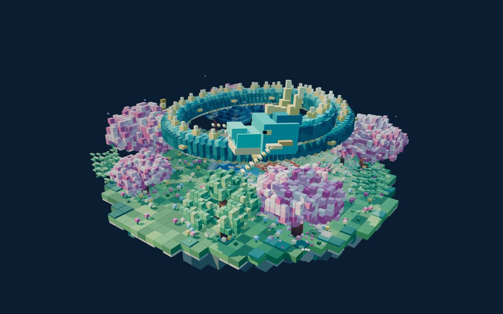

模型档案
MODEL ARCHIVE — MODEL SYNTHESIS DIVISION DEPT RL-04
FEATURED · №001 龙游绮园 THE DRAGON'S BLOSSOM GARDEN 进入场景 ↗MODEL SYNTHESIS ARCHIVE — 模型生成作品
模型生成的，也进档案。
体素园林、雨夜街角、太阳雨里的渔港——每一件都是真的能走进去的场景，不是截图。转动、缩放，自己看一圈。
进入模型档案 ↗
03 WORKS · 持续收录